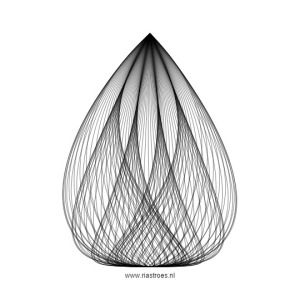
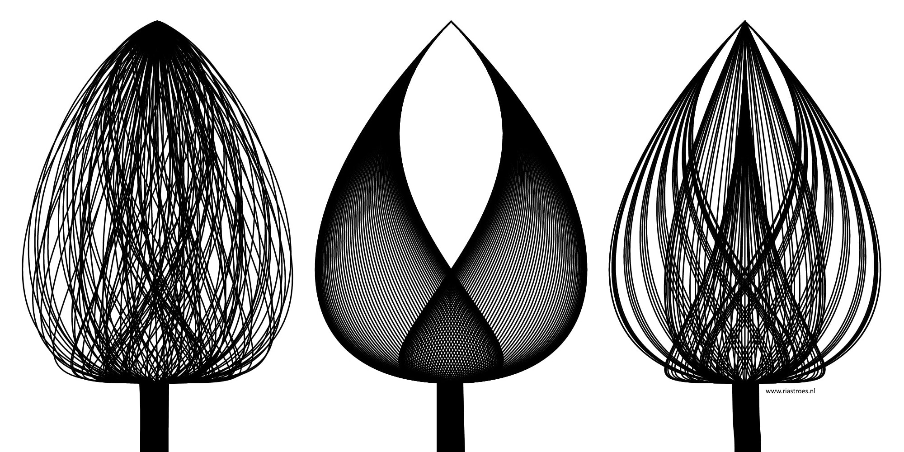
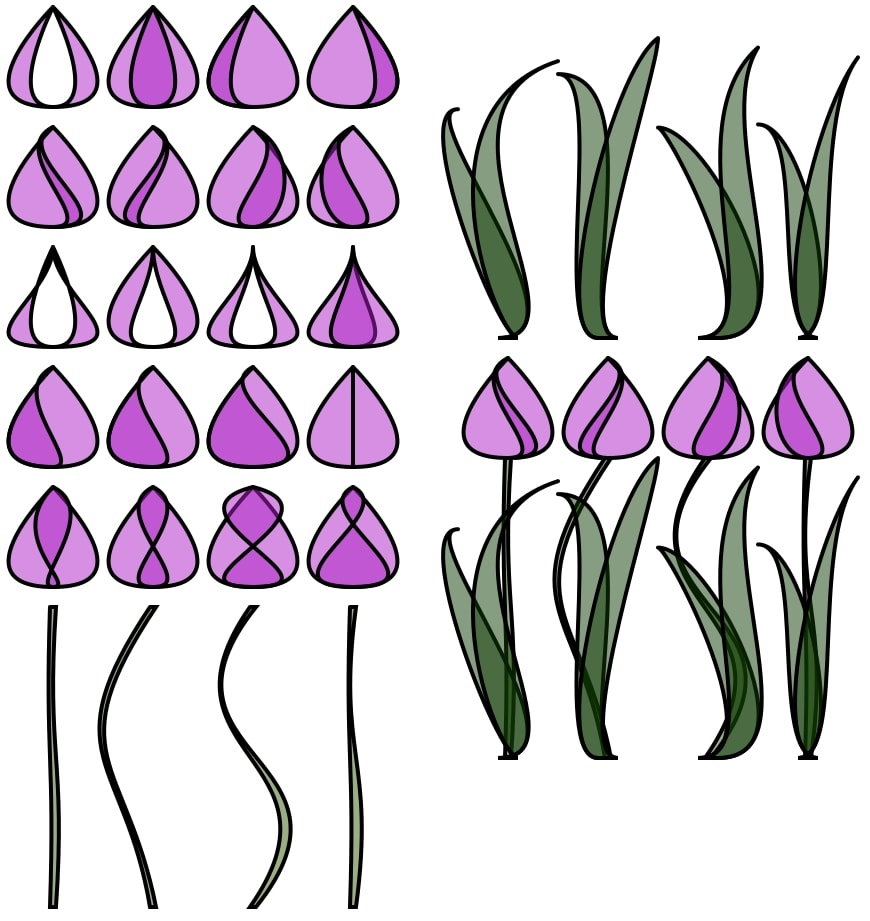
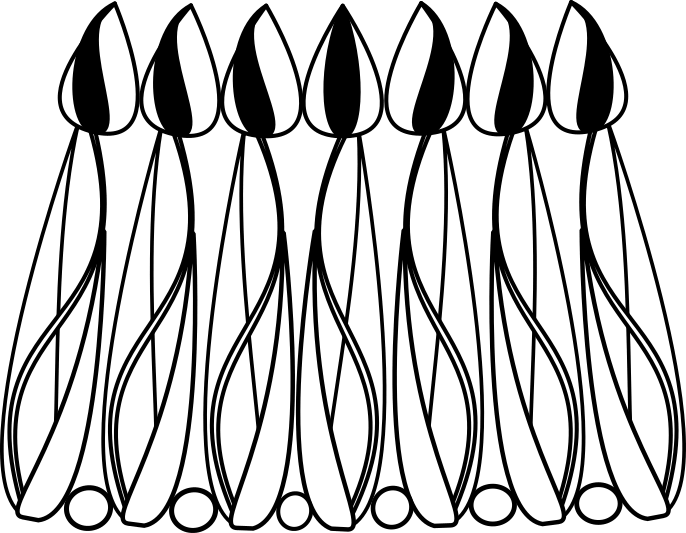
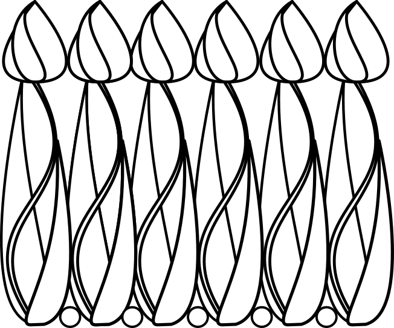

3D Printed Cuffs
My first project at Makerversity.
My idea was to make a dress, the fabric will have a design I create in P5 or in Processing. The cuffs will be made with 3D printing. As a theme for the design of the cuffs and the fabric I have chosen the tulip. This is the first sketch, my starting point. It is an result of my project "Beziers", where I found this first tulip in my drawing proces. A bezier is a curved line controlled by two control points. By this tulip one control point at the top is not changing, the other control-point is placed at the bottom of the flower and moves from left to right and back. You can't see the control-points :-)
In this sketch I have tried a thicker line, because I don't think the plastic-3D printer is so accurate. Just by choosing different distances between the beziers I found some other tulips. I like their strength, but these tulips are real eye-catchers and to strong for a motive in a pattern.
Skillshare offered me an online course Surface Pattern Design. In this class they used Adobe Illustrator, but with some help of Youtube I managed to create some patterns in Inkscape, also a vector-base drawing application. And now I have a pretty good idea of the problems with surface pattern design, so this experience I can use in my code.
The design of the cuffs
For the design of the cuffs I need a simple line drawing. These are some designs of the tulips I have created in P5 (code). They will be the base for my design of the cuffs.
I imported this svg-drawing in Inkscape and created a design for the cuffs. I hope this will come out nicely. The drawing is a simple line drawing and not to many lines or on top of each other. Also the cuffs should not have to many sharp points, that's not comfortable for cuffs.
 I have put some small circles between the tulips, so it is easier to attach the cuffs to the sleeves. The cuffs will be printed in 3D. Peggy advised me to make a flat design and after printing shape the plastic by heating. I hope she can help me with this proces.
and she did! (thanks!)